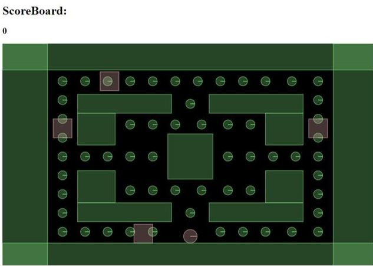

In this tutorial you will learn how to build a Pac-Man game using the Box2D JavaScript Library There are 14 tutorials for you to work through. Each of the tutorials will build your knowledge and understanding of the Box2D Library and building applications using JavaScript. You will be asked to run your code after adding new objects to the Box2D world. The code you execute within the code editor will save into the index.js file. This file can be uploaded to the editor by clicking on the read in button below the code editor. Tip: You might want to save a copy of your code within a separate editor. This will ensure you do not lose the code you are working on. Please enjoy this Pac-Man tutorial and remember you can discuss your code with an available lecturer within the Development and Communication Area of this Application. Your completed Pac-Man Box2D and JavaScript game should look similar to the image below:
